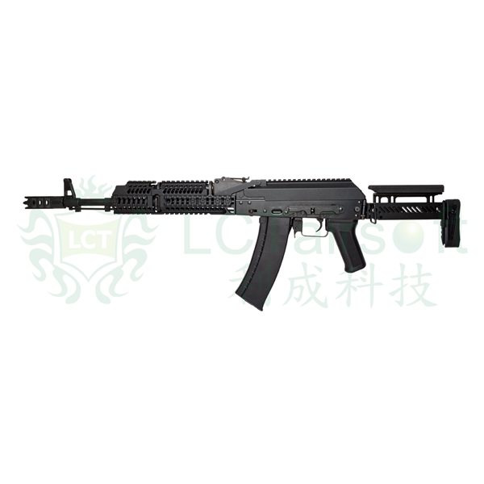

ZKS-74M AEG
The LCT ZKS 74M is a highly modernized AK that features an abundance of accessory rails, a highly versatile stock, as well as fair weight reduction. The ZKS utilizes all of LCTs latest AK upgrade furniture to make a very attractive gun that can appeal to the inner AK operator inside all AK lovers.
Unit price: USD$574.99